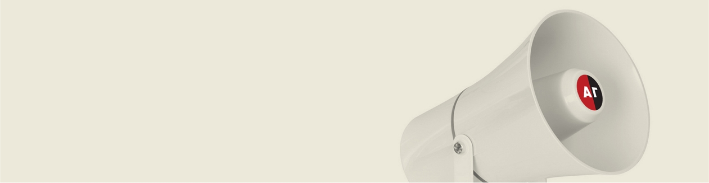

АГ-эксперт
Адвокаты и практикующие юристы анализируют правовые проблемы и помогают читателям найти пути их решения, рассказывают о новых законах и поправках в действующие законодательные акты, а также о важных тенденциях в судебной практике. Мы убеждены, что каждый член нашего общества должен знать о своих правах и способах защиты своих интересов. Именно поэтому раздел «АГ-эксперт» задуман как площадка, на которой юристы дают советы гражданам и помогают им в решении их проблем.
АГ-ракурс
Апродолжение публицистического направления, развивавшегося в «АГ» в первые десять лет, когда газета была только печатным изданием. Разного рода казусы, эмоциональный анализ, журналистское расследование – таково содержание этого раздела, где даже стандартные, на первый взгляд, ситуации высвечиваются в новом ракурсе, а острые ситуации раскрываются с неожиданной стороны.
защитники, которых
никто не защитил
Специальный проект «Адвокатской газеты» и исследователя Дмитрия Шабельникова, посвященный судьбам адвокатов, репрессированных в период с 1917 по 1953 г. За это время репрессиям подверглись около четырех сотен адвокатов, практиковавших в Москве и на территории нынешней Московской области. Больше половины из них были расстреляны или погибли в тюрьмах до вынесения приговора, остальные были приговорены к различным наказаниям и лишь единицы оказались отпущены на свободу. Каждый материал представляет собой биографический очерк об одном из подвергнутых репрессиям защитнике